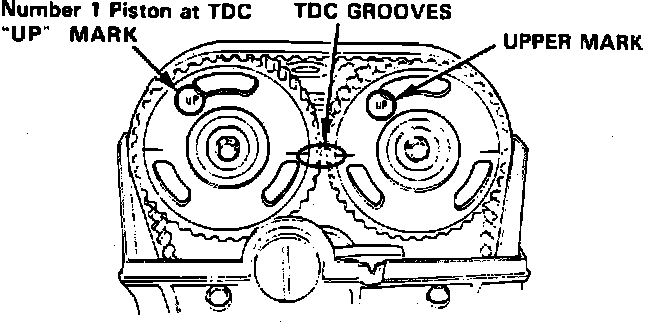
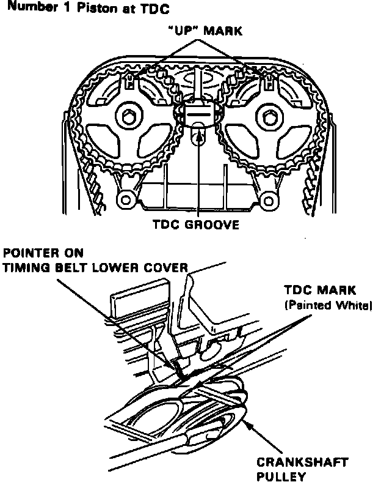

Valve Clearance: Adjustments
Fig. 53 Camshaft Pulley Timing Marks:

Fig. 54 Camshaft Pulley Timing Marks:

Valves should be adjusted cold with cylinder head temperature below 100°F.
1. Position cylinder No. 1 at TDC of compression stroke with UP marks on camshaft pulleys on top and TDC grooves on pulley aligning with cylinder head surface, Figs. 53 and 54. Distributor rotor should also be pointing toward No. 1 plug wire.
2. Loosen locknuts for No. 1 intake and exhaust valves and turn adjustment screw until feeler gauge slides back and forth with slight amount of drag, then torque intake and exhaust valve locknuts to 18 ft. lbs.
3. Rotate crankshaft 180° counterclockwise. The UP marks on pulley should be at exhaust side and distributor rotor should point toward No. 3 plug wire. Check clearance on cylinder No. 3 and adjust as in step 2.
4. Rotate crankshaft 180° counterclockwise. The UP marks on pulley should be at bottom and distributor rotor should point toward No. 4 plug wire. Check clearance on cylinder No. 4 and adjust as in step 2.
5. Rotate crankshaft 180° counterclockwise. The UP marks on pulley should be at intake side and distributor rotor should point toward No. 2 plug wire. Check clearance of cylinder No. 2 and adjust as in step 2.